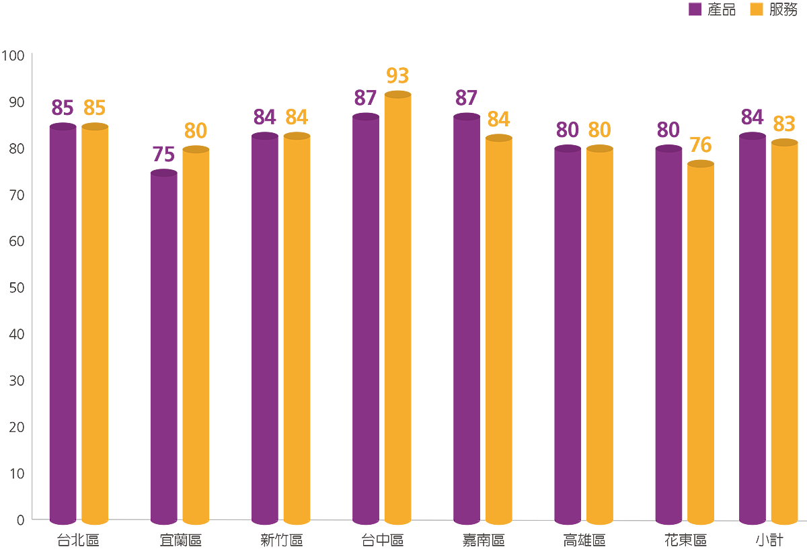
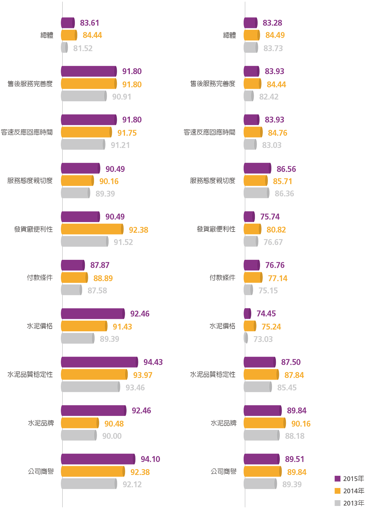

客戶服務
給予客戶滿意的產品與服務，是台泥創立以來努力追求之目標，台泥深知唯有為顧客創造最大價值，得到更大的信賴與支持，才能累積更多的顧客。因此，台泥積極建構行銷與服務平台，整合集團資源，全力提供完善的售前、售中與售後服務。提升專業技術及服務速度，落實顧客關係管理，累積人才與經驗，強化核心專長，創造更高的顧客滿意度。
台泥每年定期辦理客戶滿意度調查，發放問卷給當年度有交易且非關係企業之所有客戶，以作為改善及督導之依據，同時亦了解目前市場趨勢及客戶需求，隨時衡量市場情況，適時調整各項交易條件，縮短目標（客戶使用水泥產品時對調查項目之重視程度）與現況（客戶使用水泥產品時對調查項目之滿意程度）間的差距，達到客戶與公司相輔相成、提升公司整體利潤。
下圖為2015年度內銷水泥顧客滿意度調查結果，其中，客戶對於售後服務完善度、客訴反應回應時間、服務態度親切度、發貨廠便利性、水泥價格、水泥品質穩定性、水泥品牌及公司商譽等項目之重視度均高於90%；而實際滿意度調查結果中，除發貨廠便利性、付款條件及水泥價格外，其他項目之滿意度均高於80%，整體滿意度歷年來均維持在約83%，顯示台泥產品及服務品質為客戶所肯定。
2015年客戶滿意度調查：地區別對產品/服務滿意度情形

客戶滿意度調查 - 重視度 (單位：%) |
客戶滿意度調查 - 滿意度 (單位：%) |
 |
客戶服務統計
2015年度客戶服務事項共67件，均已如期結案；客戶抱怨事項則有6件，其中5件為水泥品質抱怨，主因為石灰石來源改變，品質變異較大，惟均優於CNS品質規範，依〈研〉定期檢驗市面上同業水泥品質，本公司之水泥品質優異，皆已由相關權責人員處理說明，客戶反應滿意接受，且均於年度結束前結案。
| 客戶服務項目 | 2013年 | 2014年 | 2015年 | ||||||
|---|---|---|---|---|---|---|---|---|---|
| 已立案 | 處理中 | 已結案 | 已立案 | 處理中 | 已結案 | 已立案 | 處理中 | 已結案 | |
| 樣品提供 | 18 | - | 18 | 24 | - | 24 | 15 | - | 15 |
| 訪廠參觀 | - | - | - | 2 | - | 2 | - | - | - |
| 會同抽驗 | 32 | - | 32 | 35 | - | 35 | 49 | - | 49 |
| 其他 | - | - | - | 2 | - | 2 | 3 | - | 3 |
| 合計 | 50 | - | 50 | 63 | - | 63 | 67 | - | 67 |
| 客戶抱怨項目 | 2013年 | 2014年 | 2015年 | ||||||
|---|---|---|---|---|---|---|---|---|---|
| 已立案 | 處理中 | 已結案 | 已立案 | 處理中 | 已結案 | 已立案 | 處理中 | 已結案 | |
| 紙袋品質 | - | - | - | - | - | - | 1 | - | 1 |
| 水泥品質 | 7 | - | 7 | - | - | - | 5 | - | 5 |
| 水泥色差 | 1 | - | 1 | - | - | - | - | - | - |
| RMC強度 | 1 | - | 1 | - | - | - | - | - | - |
| 水泥結塊 | - | - | - | 2 | - | 2 | - | - | - |
| 合計 | 9 | - | 9 | 2 | - | 2 | 6 | - | 6 |
雞尾酒式客製服務
為協助下游客戶在應用台泥產品時，能有更高的價值與發揮應用，台泥設有專屬研究室配合各生產及業務單位，提供雞尾酒式客製服務及客訴解決方案。除了為客戶提供樣品試用、訪廠參觀、會同取樣抽驗、試拌及技術諮詢等服務之外，還會到施工現場提供配比支援，讓客戶真正體認到台泥優於同業的穩定質量。